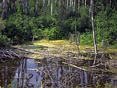

Habitat Requirements
Roads Closed
Forest Harvesting
Moose and Us
Aloes aloes (also known as "Moose")

Moose have inhabited the forests of Saskatchewan for thousands of years. Their habitat is shared by at least 60 other kinds of birds and animals. |

Moose are the largest members of the deer family. A fully-grown bull moose can weigh up to 600 kilograms and stand 3 metres tall. Cow moose are slightly smaller. Because some moose calves are eaten by bears and wolves, cow moose in summer are sometimes seen alone. |
In late September during mating season, bulls can become very aggressive. Some have even been known to charge automobiles! At other times of the year bulls are more elusive. Their acute sense of smell and hearing help moose to avoid contact with people. |
Long-legged and strong, moose are well-adapted to Saskatchewan winters. When the weather turns bitterly cold, moose only travel a short distance to feed. This helps them to conserve their fat reserves. |
The next time you hike a forest trail, look for the long, sharply-pointed tracks of moose. |
Moose require a combination of habitat types. They need young vegetation for food, and some older forest for shelter. The main spring and summer foods for moose are leaves, forbs and underwater plants. In autumn and winter they eat the twigs of willows, saskatoons, and other deciduous shrubs. Moose eat between 4 and 12 kilograms of these foods daily. |
In extreme hot or cold weather, moose seek the shelter of dense spruce, pine or tamarack stands. These evergreen thickets are shaded in summer. They also block the chilling winds of winter blizzards. |
 At calving time in May, cow moose seek thick cover in bogs, or move to islands and peninsulas. These hiding spots offer some protection from insects, and a view of approaching predators. |

Bush roads built to harvest and haul timber are also used by big game hunters. Because of this easy access, much prime habitat next to roads contains few or no moose. Forest companies and wildlife managers have taken steps to solve this problem. After cutover areas are prepared and planted, many roads through the forest are closed. This action reduces hunting pressure. It also allows more moose to occupy habitat that has been enhanced by logging. |
Forest Harvesting and the Moose
Shrubs and young poplar trees grow well in cutover areas. Certain forest harvesting practices can enhance this winter food supply for moose. To benefit moose, the shape of cutover areas should be irregular and no wider than 440 metres. This cutting plan allows moose to feed close to protective cover. Areas of standing timber will be left between cutovers. These areas must be large enough to shelter moose and other forest wildlife. Wildlife travel corridors can be preserved by leaving patches of trees within cutovers. |

Northern residents have always seen moose as a source of food and clothing. In recent times, thousands of sport hunters have also stalked this giant of the forest. In fact, moose hunting in Saskatchewan is a major form of tourism. Its value as a game animal is only one reason to conserve moose habitat. Non-hunters who enjoy nature are also thrilled by the sight of a moose. |